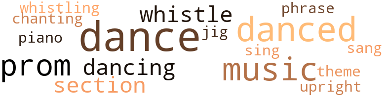
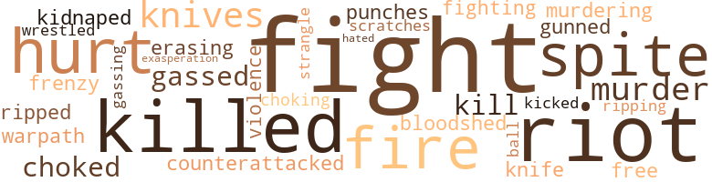
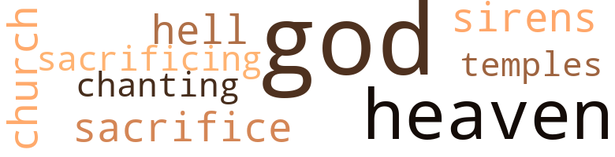

Anything for a Friend, by Davis, Russell F. (1963)
51 music-related terms matched in this text.
Most frequent terms in this topic: dance (12); danced (8); music (7); whistle (3); dancing (3)
dance.n.01
Definition: an artistic form of nonverbal communication
| word | sentence |
|---|---|
| dance | While riots and bloodshed and arrests and beatings swirled all around me , I would just calmly conduct Sally to the Prom and dance with her calmly and quietly and refuse to argue with anybody or fight with anybody or even retaliate from any of the punches rained on my head but bear them all without even changing expression , like Gandhi . |
| dance | I watched Thad and her dance and I could see she was leading but with her yakking in his ear so fast I doubt if he even noticed . |
| dance | At eleven-thirty the tough contingent arrived , charging out on the floor practically in a flying wedge that made everybody turn and look , particularly me , who nearly died right there on the spot until I saw that all they did was mix in and dance . |
| dance | After all it was just a school dance . |
| dance | " I imagine you two already know each other , " she drawled in this terribly matter-of-fact tone , and turned and left me there while she went over and stuck a dance record on loud . |
dance.v.02
Definition: move in a pattern; usually to musical accompaniment; do or perform a dance
| word | sentence |
|---|---|
| dancing | " Mr. Moore , if you had only stayed for one minute last night when you came to our house to call for Sally , you would have seen how perfectly marvelously she and Clarence were dancing downstairs and what an absolute dream couple they make . " |
| dancing | She was dancing with one of them - Joey Long - the toughest of all . |
dance.v.03
Definition: skip, leap, or move up and down or sideways
| word | sentence |
|---|---|
| dance | " Start learning to dance , slewfoot , " I said . |
| dance | They do n't dance with any whites or speak to whites , and the whites ignore them . " |
| dance | How can he dance , even ? " |
| danced | That I had danced with her and we had been that close and it had gone so smoothly there in the Jablonski 's rec room seemed impossible now . |
| danced | That second I held the match for her was the closest I had ever been to her face , even closer than when we had danced in the rec room . |
| dance | You know , you dance good , " I said . |
| dance | " I know , I dance good . " |
| dance | " I dance goodl " " Well , you do . " |
| danced | She gave me an outraged glance and at the same time automatically put up her arms again because the music had begun , and we danced again . |
| danced | Then we went back and danced some more and it was actually pretty good . |
| danced | There was a jukebox and Sally and I danced two or three but mostly sat . |
| dancing | Until she hinged away from me and , still hopping up and down like a bunny rabbit , gave me this unexpected shove in the small of my back and - suddenly there I was , dancing with Sally . |
| dance | I mean she knew how to dance . |
| danced | I mean I had never danced with any girl who danced this well . |
| danced | I mean I had never danced with any girl who danced this well . |
| danced | Then she danced with Sally , but I cut in on this and took Sally . |
jig.n.01
Definition: music in three-four time for dancing a jig
| word | sentence |
|---|---|
| jig | His eyes did a little jig . |
music.n.01
Definition: an artistic form of auditory communication incorporating instrumental or vocal tones in a structured and continuous manner
| word | sentence |
|---|---|
| music | She gave me an outraged glance and at the same time automatically put up her arms again because the music had begun , and we danced again . |
| music | The music has stopped , she said . |
| music | Oh my God , I thought as the music stopped , now it happens , and I felt like hollering help and wondered if my throat would let me . |
| music | But in time with me , no matter what the music did . |
| music | The music stopped and I was surprised it seemed to end so soon . |
| music | The music started again and Sally automatically raised her arms and so did I and there we were again dancing and believe it or not that 's the way it went till the end of that side of the LP record . |
| music | As the music stopped , Sally gave this gushy little laugh and then instantly suppressed it . |
phrase.n.02
Definition: a short musical passage
| word | sentence |
|---|---|
| phrase | This was a phrase she had robbed , of course , from Miss Fink . |
piano.n.01
Definition: a keyboard instrument that is played by depressing keys that cause hammers to strike tuned strings and produce sounds
| word | sentence |
|---|---|
| piano | We went in the living room , which to my surprise seemed just like any other living room except that the photographs on the piano were Negroes instead of whites . |
promenade.n.01
Definition: a formal ball held for a school class toward the end of the academic year
| word | sentence |
|---|---|
| Prom | " And yet you 're not going to the Prom with her ? " |
| prom | " Mr. Moore , have you ever attended a high-school prom in this town ? " |
| proms | So she went on to describe the situation at proms . |
| prom | " Clarence - Clarence , it just ca n't be true that you seriously plan to take a colored girl to your own class prom ! " |
| proms | I figure these rags have been to so many proms they know their way around better than I do , so I might as well relax and let them show me the way around . |
| Prom | Then Arabella grabbed me again and dragged me out to the dark kitchen , but before I could get organized to kiss her or anything she quickly opened a door and began shoving me ahead of her down the basement stairs into their rec room , saying very rapidly in a low voice , " Now babykins do n't resist me I 'm doing this for your own benefit I told you I ca n't go to the Prom with you and that 's true but I do have somebody just as good for you and I want you to take her as a favor to me she is a very beautiful and intelligent girl darling and believe me you will deeply treasure and value this experience for the rest of your life and remember always that I love you . . . " What the - " I said , trying to stop and turn and argue with her . |
section.n.01
Definition: a self-contained part of a larger composition (written or musical)
| word | sentence |
|---|---|
| section | As I was easing out the front door hoping to sit down with the evening paper on the stoop and read the funnies in privacy , she came tiptoeing after me and carefully closed the door behind her , my father being inside sound asleep in his chair under the real estate section . |
| section | She slid her spectacular legs to one side and patted the lower section of the chaise . |
| section | It 's the other side of the new industrial section which itself is on the outskirts of town . |
sing.v.02
Definition: produce tones with the voice
| word | sentence |
|---|---|
| sing | I was all set to sing out , " I 've come to collect ! " but for some reason her manner annoyed me . |
| sang | My mother compressed her lips and went back to the kitchen while I galloped upstairs and yelled and sang and splashed water all over the bathroom walls and floor and ceiling like an escaped ape . |
theme.n.03
Definition: (music) melodic subject of a musical composition
| word | sentence |
|---|---|
| theme | In fact this was the theme of the whole course this year , human equality . |
tone.v.01
Definition: utter monotonously and repetitively and rhythmically
| word | sentence |
|---|---|
| chanting | I of course recognized Professor Jablonski 's big bald head and clamshell mouth from the time on TV news when two cops had lugged him all the way across Boston Common to their paddy wagon with him chanting " Ban the bomb ! |
upright.n.02
Definition: a piano with a vertical sounding board
| word | sentence |
|---|---|
| upright | She was sitting bolt upright staring at Mr. Moore . |
whistle.v.01
Definition: make whistling sounds
| word | sentence |
|---|---|
| whistling | Anyhow I could practically see her dopey little face with the gray eyes and the tiny gap between her front teeth as if for whistling only she ca n't whistle , and frankly I guess I sort of gagged remembering how she looked and thinking how far out of my mind I must have been to go for her only a year before . |
| whistle | Anyhow I could practically see her dopey little face with the gray eyes and the tiny gap between her front teeth as if for whistling only she ca n't whistle , and frankly I guess I sort of gagged remembering how she looked and thinking how far out of my mind I must have been to go for her only a year before . |
| whistle | Pretty soon somebody blew a car horn so all the horns started blowing and one of the cops striding around in his black rubber coat blew his whistle causing all the horns instantly to stop , which was a panic , so then they started again . |
| whistle | Nothing , he replied , I just want you to know I 'm outside , if you need me whistle through your fingers . |
63 violence-related terms matched in this text.
Most frequent terms in this topic: fight (9); killed (4); murder (3); spite (3); riots (3)
abrasion.n.01
Definition: an abraded area where the skin is torn or worn off
| word | sentence |
|---|---|
| scratches | I made out a few tiny red scratches . |
aggravation.n.01
Definition: an exasperated feeling of annoyance
| word | sentence |
|---|---|
| exasperation | Arabella sighed with exasperation . |
bloodshed.n.01
Definition: the shedding of blood resulting in murder
| word | sentence |
|---|---|
| bloodshed | While riots and bloodshed and arrests and beatings swirled all around me , I would just calmly conduct Sally to the Prom and dance with her calmly and quietly and refuse to argue with anybody or fight with anybody or even retaliate from any of the punches rained on my head but bear them all without even changing expression , like Gandhi . |
brawl.n.02
Definition: a noisy fight in a crowd
| word | sentence |
|---|---|
| free-for-all | I could have contributed to the moral aspects too , the class being such a strictly democratic free-for-all , but I was afraid it might turn her against me instead of attracting her attention the way I wanted to , not to mention the hazard of a big fat flunk from Miss Fink . |
counterattack.v.01
Definition: make a counterattack
| word | sentence |
|---|---|
| counterattacked | So of course he tried to slug me , but I saw his clumsy sidewinder forming up before he even knew he was going to throw it himself and I dodged which naturally made him all the more frustrated so he started trying to needle me with more stuff about Arabella and how she was going to sign me up as a freedom rider , so I counterattacked by telling him I was going to fix him up with a date for the Prom with Mary Fatt . |
craze.n.02
Definition: state of violent mental agitation
| word | sentence |
|---|---|
| frenzy | I looked at her , surprised at the frenzy she seemed to have worked herself into . |
erase.v.01
Definition: remove from memory or existence
| word | sentence |
|---|---|
| erasing | He would have a hell of a time erasing that . |
fight.n.02
Definition: the act of fighting; any contest or struggle
| word | sentence |
|---|---|
| fighting | Did he know about knife fighting ? |
fight.n.05
Definition: a boxing or wrestling match
| word | sentence |
|---|---|
| fight | There is going to be a fight , I thought , there is going to be a fight and I am going to lose . |
| fight | There is going to be a fight , I thought , there is going to be a fight and I am going to lose . |
| fight | While riots and bloodshed and arrests and beatings swirled all around me , I would just calmly conduct Sally to the Prom and dance with her calmly and quietly and refuse to argue with anybody or fight with anybody or even retaliate from any of the punches rained on my head but bear them all without even changing expression , like Gandhi . |
| fight | I knew what they were , brass knuckles in case of a fight . |
fight.v.02
Definition: fight against or resist strongly
| word | sentence |
|---|---|
| fight | I mean he is even less willing to fight than I am , if that is possible , but also too dumb to smell a bluff . |
| fight | " Listen , " I said in a grim voice , " if you really want to help , then round up some guys who know how to fight dirty . " |
| fight | " Clarence , you will not fight back , either , no matter what happens . |
| fight | A guy started out on the floor in his rolled up scarlet Stetson , and I saw Matchhead go for him and grab it off his head , and saw the guy quit dancing and square off to fight but quickly change his mind and lift up one foot and twirl his spurs with his forefinger instead . |
| fight | " Why fight them ? " |
gag.v.06
Definition: cause to retch or choke
| word | sentence |
|---|---|
| choked | I said , " Yeah , why not ? " in a choked up voice , I guess , that probably showed how jumpy I felt , but what could I do ? |
| choking | " Yes , " I said , sort of choking . |
| choked | You can take your goddam - " But to my surprise I choked suddenly and could n't go on . |
gas.v.01
Definition: attack with gas; subject to gas fumes
| word | sentence |
|---|---|
| gassed | I told her that before I went to bed I had gassed a while with my family without telling her what we had gassed about . |
| gassed | I told her that before I went to bed I had gassed a while with my family without telling her what we had gassed about . |
| gassing | At least my mother was always gassing on the phone about PTA stuff . |
gun.v.01
Definition: shoot with a gun
| word | sentence |
|---|---|
| gunned | Arabella gunned through a yellow light that was turning red . |
hate.v.01
Definition: dislike intensely; feel antipathy or aversion towards
| word | sentence |
|---|---|
| hated | It would look as though I had turned her down because she was a Negro and I would look like somebody who hated Negroes , a White Citizens Council-er , somebody like that , whereas she , Arabella , knew I was not like that . |
injury.n.01
Definition: any physical damage to the body caused by violence or accident or fracture etc.
| word | sentence |
|---|---|
| hurt | He gave me a hurt look . |
kick_back.v.02
Definition: spring back, as from a forceful thrust
| word | sentence |
|---|---|
| kicked | I could have kicked her . |
kidnap.v.01
Definition: take away to an undisclosed location against their will and usually in order to extract a ransom
| word | sentence |
|---|---|
| kidnaped | After supper Arabella came by in her father 's Renault and simply kidnaped me . |
kill.v.10
Definition: cause the death of, without intention
| word | sentence |
|---|---|
| kill | " I 'll kill you ! " he yelled . |
| kill | As he reached for my hand I had a tendency to pull back because I was afraid he might , kill me with his grip , being such a large guy , but he just gave me a calm once-over with his sort of humorous-looking eyes . |
| killed | It 's just that I 'm all they have , my older brother Nate having been killed away back in the Korean War . |
| killed | " But it was n't Pop 's fault , " I said , " that he was killed . |
| killed | I began to think of things I could do to Bensdorp , like get some grass poison and spray it on his lawn , only spray carefully , spelling out " Jim Crow Must Go " in big letters of killed grass . |
| killed | Everybody including Arabella went off in different directions to their classes and I could have killed him . |
knife.n.02
Definition: a weapon with a handle and blade with a sharp point
| word | sentence |
|---|---|
| knives | I 'll bring a flashlight and knives . " |
| knives | " Hey , no knives , that 's out . " |
| knives | I was thinking how it would be if about twenty guys surrounded us , the first thing they would do is get the knives away from us , then they would start using them . |
| knife | Did he know about knife fighting ? |
malice.n.01
Definition: feeling a need to see others suffer
| word | sentence |
|---|---|
| spite | In spite of Miss Fink trying to act like nothing had happened , from here on in , the class , the school , and before the day was over the whole town was buzzing like a bunch of buzzards . |
| spite | In spite of her mother she seems to have good instincts . |
| spite | So then I took her the rest of the way to her front steps and said good night and in spite of the fact no one was around to see anything I did n't kiss her again . |
murder.n.01
Definition: unlawful premeditated killing of a human being by a human being
| word | sentence |
|---|---|
| murder | The hike back was murder . |
| murder | They 'll murder you . " |
| murder | " Who 'll murder me ? " |
murder.v.01
Definition: kill intentionally and with premeditation
| word | sentence |
|---|---|
| murdering | Naturally I felt like murdering Arabella , not to mention shooting myself . |
musket_ball.n.01
Definition: a solid projectile that is shot by a musket
| word | sentence |
|---|---|
| ball | She had a ball . |
open_fire.v.01
Definition: start firing a weapon
| word | sentence |
|---|---|
| fire | So to fire my father out of Hapgood 's real estate office maybe Bensdorp , not Hapgood , would have to be the one to give the word . |
| fire | They 've probably already told him they 'll fire him if he does n't stop us , so he 's going to conform . |
| fire | " But how can they fire him ? |
pain.v.02
Definition: cause emotional anguish or make miserable
| word | sentence |
|---|---|
| hurt | Of course the fact that you 're not the only one - that Sally 's involved too , and that she may get hurt by all this - would n't interest you at all . " |
| hurt | They would just help him out and make sure he did n't hurt himself or suffocate or anything during the few seconds or minute or so until he came to . |
punch.n.01
Definition: (boxing) a blow with the fist
| word | sentence |
|---|---|
| punches | While riots and bloodshed and arrests and beatings swirled all around me , I would just calmly conduct Sally to the Prom and dance with her calmly and quietly and refuse to argue with anybody or fight with anybody or even retaliate from any of the punches rained on my head but bear them all without even changing expression , like Gandhi . |
riot.n.01
Definition: a public act of violence by an unruly mob
| word | sentence |
|---|---|
| riots | They have race riots there , do n't they ? " |
| riots | While riots and bloodshed and arrests and beatings swirled all around me , I would just calmly conduct Sally to the Prom and dance with her calmly and quietly and refuse to argue with anybody or fight with anybody or even retaliate from any of the punches rained on my head but bear them all without even changing expression , like Gandhi . |
| riots | Kremlin sneers , riots in Johannesburg , Justice Department conferring with Supreme Court , paratroopers in readiness , vigil of ten thousand outside jail . |
| riot | She 's trying to stir up a race riot . " |
| riot | " A race riot , " I said . |
rip.v.04
Definition: criticize or abuse strongly and violently
| word | sentence |
|---|---|
| ripped | " It 's - like classified , " I said , and before she could think of anything else to ask I ripped out of the house and took off for the school . |
| ripping | Finally Mr. Griffin came ripping out and leaped into the station wagon in the driveway and Mrs. Griffin stumbled after on her high heels with Mr. Griffin jawing at her as they backed out and took off down the street ruining the tires . |
strangle.v.01
Definition: kill by squeezing the throat of so as to cut off the air
| word | sentence |
|---|---|
| strangle | Holding both my hands tightly in hers she hauled me over to the sofa where she fell backward , pulling me on top of her , but at the same time grabbing my neck with both hands and squeezing , cutting off my windpipe so I was forced to break away from her unless I wanted to strangle to death . |
violence.n.01
Definition: an act of aggression (as one against a person who resists)
| word | sentence |
|---|---|
| violence | Now listen to me , Clarence , there will be absolutely no violence ! " |
warpath.n.01
Definition: hostile or belligerent mood
| word | sentence |
|---|---|
| warpath | " Sally 's father is on the warpath ! " |
wrestle.v.01
Definition: combat to overcome an opposing tendency or force
| word | sentence |
|---|---|
| wrestled | In the middle of it her glasses fell off her face and sort of half folded up and as we wrestled around suddenly disappeared down the neck of her blouse . |
28 religion-related terms matched in this text.
Most frequent terms in this topic: God (11); heaven (6); gods (4); sacrifice (1); sacrificing (1)
church.n.02
Definition: a place for public (especially Christian) worship
| word | sentence |
|---|---|
| church | Of course I was safe as a church , Herby Callanan being a well-known chicken . |
eden.n.01
Definition: any place of complete bliss and delight and peace
| word | sentence |
|---|---|
| heaven | " For heaven 's sake , do n't you read the papers or watch TV ? " |
| heaven | So for heaven 's sake do n't spoil it now . " |
| heaven | " For heaven 's sake why do you have to take a shower now ? " she wanted to know . |
| heaven | Why do you need to feel superior , for heaven 's sake ? |
| heaven | " Mother , for heaven 's sake - " Arabella laughed . |
| heaven | " Yes Mother , for heaven 's sake what ? " |
god.n.03
Definition: a man of such superior qualities that he seems like a deity to other people
| word | sentence |
|---|---|
| gods | Ye gods , what difference does it make ? " |
| God | " Oh Ma , for God 's sake ! " |
| God | Perhaps you do n't realize it , but - " " Ma , for God 's sake am I an idiot or something ? " |
| God | " Ma , honest to God , I do n't know what you 're talking about ! " |
| God | " Ma , for God 's sake do n't I have the right to take the girl of my choice ? " |
| God | It was true that I had practically moved out of home except for sleeping and in on the Fatts because of my yen for Mary with whom I would have been only too happy to have included the sleeping too if I had been able to make it , which I damn near did , frankly , once , which little fact of course my father did n't know , thank God . |
| gods | Ye gods , is n't the purpose of being an adolescent in the first place to get mature ? |
| God | " But for God 's sake , why take it out on Pop ? |
| gods | " Ye gods , why do I have to have a crush on anybody ? " |
| God | " For God 's sake ! " |
| God | For God 's sake why could n't she let it go ? |
| God | Then the way she leaped along the sidewalk and could n't even stay beside me but had to loop along a little way ahead walking sideways and then backwards in order to keep facing me annoyed me so much I stopped and told her for God 's sake get beside me I So she did , by taking hold of my arm . |
| God | The second I made just the slightest move toward her my God she was swarming all over me , throwing her arms around my neck and sticking her tongue into my mouth . |
| God | Through the doorway down back in the kitchen I just happened to catch sight of her lugging this terribly heavy wooden rack of glassware across the floor and even all that distance I could see the vertical vein standing out in her forehead and the dog-tired look in her big eyes and oh my God I could feel these little cold tubes draining inside my chest although I did n't say a word or move a muscle . |
| gods | " Ye gods , to reserve my junk for the Prom ! " |
hell.n.01
Definition: any place of pain and turmoil
| word | sentence |
|---|---|
| hell | So what the hell was this ? |
sacrifice.v.04
Definition: make a sacrifice of; in religious rituals
| word | sentence |
|---|---|
| sacrifice | Everybody has to sacrifice something . |
| sacrificing | As she said this it came to the tip of my tongue to ask her what the hell she was sacrificing , but then I suddenly realized what it was , she was sacrificing herself - to me , that is - which made me feel slightly lousy because that meant she did n't really go for me herself sincerely but was only taking me on for the sake of the goddam cause . |
siren.n.01
Definition: a sea nymph (part woman and part bird) supposed to lure sailors to destruction on the rocks where the nymphs lived
| word | sentence |
|---|---|
| sirens | I mean by the time the bell rang everybody knew what they were going to do - namely , blab it to everybody else - and they piled out of World Problems like the sirens were screaming , everybody but Arabella that is , who hung back waiting to see Miss Fink . |
temple.n.03
Definition: an edifice devoted to special or exalted purposes
| word | sentence |
|---|---|
| temples | Then Sally stood on tiptoe to kiss her father and I caught sight of his temples for a second rippling like mad . |
tone.v.01
Definition: utter monotonously and repetitively and rhythmically
| word | sentence |
|---|---|
| chanting | I of course recognized Professor Jablonski 's big bald head and clamshell mouth from the time on TV news when two cops had lugged him all the way across Boston Common to their paddy wagon with him chanting " Ban the bomb ! |